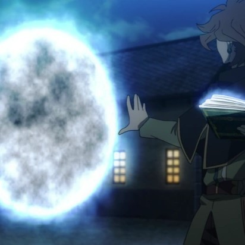
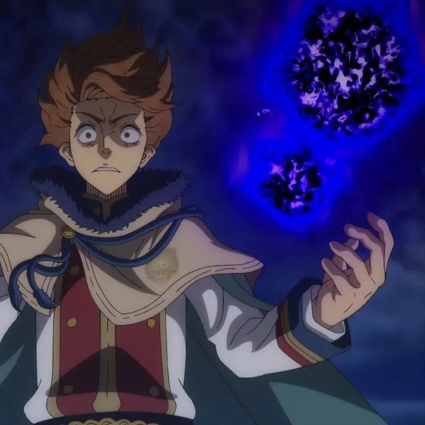
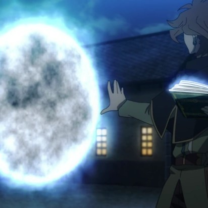
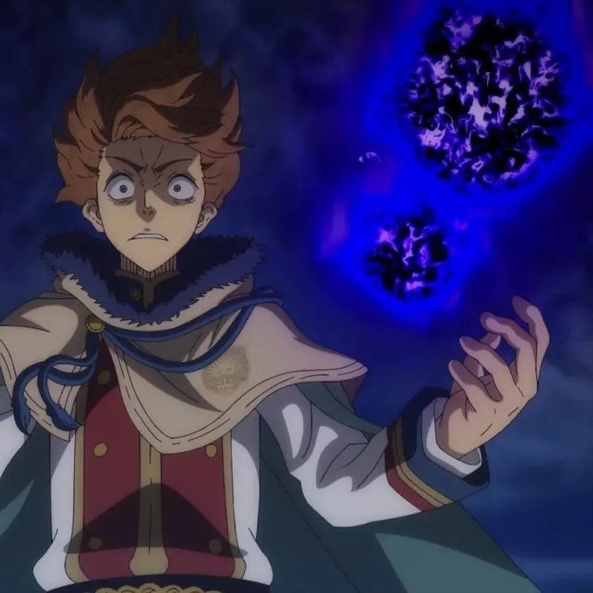

Grimorio de 3 hojas
El Grimorio es una especie de libro, el cual es esencial para que un usuario de magia sea considerado como un mago. Cada grimorio es distinto a los demás
El grimorio responde de manera natural a la petición de su amo, pero hay circunstancias en donde la magia se fortalece, y a la vez se manifiesta, los factores son:
Los caballeros mágicos perteneciente a una familia real, fueron bendecidos con una vasta cantidad de poder mágico, ademas de controlar la magia por instinto (exceptuando a Noelle), la cual la mayoría de ellos no entrena, el caso de la Clase baja/Plebeyos son pocos los que lo manifiestan con un gran poder mágico y teniendo el control de ella, mayormente siempre esperan a la ceremonia de entrega para que esto suceda.
Grimorio de 3 hojas

Grimorio de 4 hojas

Grimorio de 5 hojas
Hay varios tipos de magia en Black Clover, cada uno con sus propias habilidades y características.
La magia elemental es el tipo de magia más común en Black Clover. Se basa en los cuatro elementos principales: fuego, agua, tierra y aire. Los usuarios de magia elemental son capaces de controlar y manipular estos elementos para crear ataques poderosos.
La magia de creación permite a los usuarios crear objetos y materiales de la nada. Los usuarios de magia de creación son muy valiosos en la construcción y la reparación de objetos.


La magia de refuerzo permite a los usuarios mejorar sus habilidades físicas y mentales. Los usuarios de magia de refuerzo son capaces de aumentar su fuerza, velocidad y resistencia


La magia espacial permite a los usuarios manipular el espacio y el tiempo. Los usuarios de magia espacial son capaces de teletransportarse a cualquier lugar y manipular el tiempo para predecir los movimientos de sus enemigos.
 



La magia de sombra permite a los usuarios manipular la oscuridad y la sombra. Los usuarios de magia de sombra son capaces de ocultarse en la oscuridad y crear ilusiones para confundir a sus enemigos.


La Anti-Magia es una energia unica que es capaz de anular otros tipos de magia. Proviene de un demonio conectado al grimorio de Asta.
Debido a que la Anti-Magia naturalmente se opone a cualquier magia, solo alguien sin ningún poder mágico puede manejarlo. Sin embargo, sus propiedades anuladoras de magia se han agregado a otros tipos de magia a través de circunstancias especiales.
Además, la Anti-Magia no puede ser copiada por Magia de Imitación, pero puede ser duplicada por Magia de Espejo.